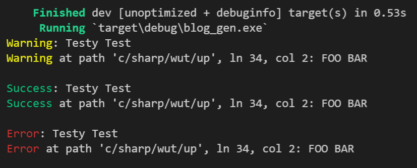

Here we go again.
cargo new blog_gen
I'll start by fleshing out the main loop. While I mentioned starting bottom up in the past, I want the core structure written then will fill in the blanks. My dependencies are already known:
[dependencies]
# Used for cmd line messages
ansi_term = "0.12"
# Used for parallelization
rayon = "1.5"
# Used for directory traversal
walkdir = "2.3"
Before getting into the guts, I'll start by writing a module to output messages. The name of the module may change over time once I have a better grasp on the use cases.
// console.rs
use crate::Location;
use ansi_term::Colour;
pub fn error(msg: &str, location: Option<Location>) {
let location = pretty_print_loc(location);
let colour = Colour::Red;
println!("{}{}: {}", colour.paint("Error"), location, msg);
}
pub fn warn(msg: &str, location: Option<Location>) {
let location = pretty_print_loc(location);
let colour = Colour::Yellow;
println!("{}{}: {}", colour.paint("Warning"), location, msg);
}
pub fn success(msg: &str, location: Option<Location>) {
let location = pretty_print_loc(location);
let colour = Colour::Green;
println!("{}{}: {}", colour.paint("Success"), location, msg);
}
fn pretty_print_loc(location: Option<Location>) -> String {
match location {
Some(loc) => format!(
" at path '{}', ln {}, col {}",
loc.path, loc.line, loc.column
),
None => String::new(),
}
}
That results in this output:

The following is the main loop so far. I usually start by defining types to hold the data I'll be working with, then various functions that consume those types and output different types.
I'll fill in the blanks as time goes on and splitting everything out into separate modules as things get larger.
// main.rs
pub mod console;
use rayon::prelude::*;
fn main() {
// Source the context for this session
let context = match parse_env_args() {
Res::Ok(item) => item.item,
Res::Warn { item, msg } => {
console::warn(&msg, Some(item.location.clone()));
item.item
}
Res::Error { location, msg } => {
console::error(&msg, Some(location));
return;
}
};
// Traverse the input directory
let crawled_files = match map_results(crawl(context.input.clone())) {
Ok(results) => results,
Err(_) => return,
};
// Parse all intermediate representations
let ir_results: Vec<Res<IntermediateRepresentation>> =
crawled_files.par_iter().map(|f| parse(f)).collect();
let ir = match map_results(ir_results) {
Ok(ir) => ir,
Err(_) => return,
};
// Analyze it for any errors
let analyzed_ir = match map_results(analyze_ir(ir)) {
Ok(ir) => ir,
Err(_) => return,
};
// Finally generate all code
match map_results(generate(analyzed_ir)) {
Ok(_) => console::success("Success!", None),
Err(_) => {
return;
}
}
}
#[derive(Clone, Debug, PartialEq)]
pub struct Context {
pub input: Directory,
pub output: Directory,
}
pub struct CrawledFile;
#[derive(Clone, Debug, PartialEq)]
pub struct Directory(String);
pub struct Item<T> {
pub item: T,
location: Location,
}
impl<T> Item<T> {
pub fn location(&self) -> Location {
self.location.clone()
}
}
pub struct IntermediateRepresentation;
#[derive(Clone, Debug, PartialEq)]
pub struct Location {
pub column: u32,
pub file: String,
pub line: u32,
pub path: String,
}
pub enum Res<T> {
Ok(Item<T>),
Warn { item: Item<T>, msg: String },
Error { location: Location, msg: String },
}
pub fn analyze_ir(
ir: Vec<Item<IntermediateRepresentation>>,
) -> Vec<Res<IntermediateRepresentation>> {
todo!()
}
pub fn crawl(dir: Directory) -> Vec<Res<CrawledFile>> {
todo!()
}
pub fn generate(ir: Vec<Item<IntermediateRepresentation>>) -> Vec<Res<()>> {
todo!()
}
/// Maps all results from a given collection.
pub fn map_results<T>(items: Vec<Res<T>>) -> Result<Vec<Item<T>>, ()> {
let mut results = vec![];
let mut warnings = vec![];
let mut errors = vec![];
for file in items {
match file {
Res::Ok(item) => results.push(item),
Res::Warn { item, msg } => {
warnings.push((msg, Some(item.location())));
results.push(item);
}
Res::Error { location, msg } => {
errors.push((msg, Some(location)));
}
}
}
// Print all warnings
for (msg, location) in warnings {
console::warn(&msg, location);
}
// Print all errors
let exit = !errors.is_empty();
for (msg, location) in errors {
console::warn(&msg, location);
}
if exit {
return Err(());
}
Ok(results)
}
pub fn parse(file: &Item<CrawledFile>) -> Res<IntermediateRepresentation> {
todo!()
}
pub fn parse_env_args() -> Res<Context> {
todo!()
}
The parsing of env args is next, then crawling files. Last time I hacked things together quickly, this time I'll focus on keeping it data oriented and structured.
As I go back and read this, I noticed a few bugs. I strongly recommend having a merge request or pull request open for the branch you are working on. This allows you to view the code in a different way from your editor and helps catch errors. Things like
// Print all errors
let exit = !errors.is_empty();
for (msg, location) in errors {
console::warn(&msg, location);
}
can be caught ahead of time before executing.
// Print all errors
let exit = !errors.is_empty();
for (msg, location) in errors {
console::error(&msg, location);
}
Another thing I like to do in Rust is liberal usage of the todo!() macro. This enables one to rush ahead, getting things to compile, then going back and fixing it as the application progresses.